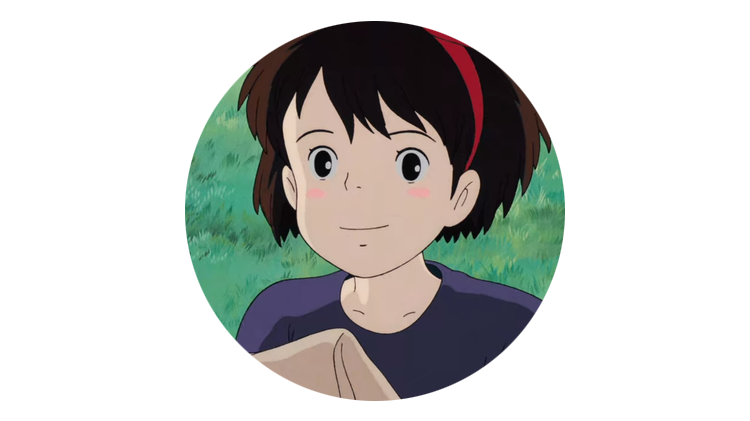

NEWS/STORY/CHARACTER/MOVIE/REVIEW
키키｜지지｜코포리

키키/キキ
마녀가 13살이 되면 수행을 위해 독립해야 한다는 전통에 따라, 마녀 키키는 고양이 지지와 함께 부모님과 고향 마을을 떠나게 된다.
키키는 바다가 보이는 한 마을에 정착하고자 한다. 하지만 생각 외로 낯선 마을에 적응하기가 쉽지 않아 곤란에 빠진다. 그런데 때마침 우연히 만난 빵집 주인 오소노가 가게 손님이 두고 간 물건을 키키가 도와줘 돌려주게 되고 그 답례로 오소노는 차를 대접하며 키키의 사정 이야기를 듣다가, 빈 방을 내주며 여기서 일하라고 한다. 이후 키키는 지지와 함께 빵집 일을 봐주고 배달 일을 하면서 신세를 갚고 돈을 벌며 생활하게 되고 이 과정에서 여러 일을 겪으면서 코포리와 우르슬라를 만나 친해지게 된다.
키키는 마녀이긴 하나 빗자루를 사용해서 날아다니는 능력과 지지의 말을 알아듣는 능력 밖에 없는데, 후반부에는 갑자기 마녀의 능력이 일시적으로 약해져서 빗자루를 타고 날 수 없게 되고 지지와 이야기를 나눌 수 없어져 크게 좌절한다. 그러나 우르술라의 오두막에서 시간을 보내며 위로를 받아 기운을 차리고, 곧이어 위험에 빠진 톰보를 구하기 위해서 노력하던 중 마법을 되찾게 된다. 그렇게 코포리를 구하는 데 성공하고 지지도 다시 돌아와 준다. 엔딩 크레딧에서는 다른 친구도 많이 생겼으며 코포리와 마을 친구들과 함께 하늘을 나는 모습이 나오고 키키가 부모님께 보내는 안부 편지를 마지막으로 영화가 막을 내린다. 마지막 장면에서 청소부 할아버지에게 빗자루를 빌렸는데 엔딩 크레딧까지 그 빗자루를 돌려주지 않은 것을 알 수 있다. 그대로 받은 것으로 보인다.
키키는 바다가 보이는 한 마을에 정착하고자 한다. 하지만 생각 외로 낯선 마을에 적응하기가 쉽지 않아 곤란에 빠진다. 그런데 때마침 우연히 만난 빵집 주인 오소노가 가게 손님이 두고 간 물건을 키키가 도와줘 돌려주게 되고 그 답례로 오소노는 차를 대접하며 키키의 사정 이야기를 듣다가, 빈 방을 내주며 여기서 일하라고 한다. 이후 키키는 지지와 함께 빵집 일을 봐주고 배달 일을 하면서 신세를 갚고 돈을 벌며 생활하게 되고 이 과정에서 여러 일을 겪으면서 코포리와 우르슬라를 만나 친해지게 된다.
키키는 마녀이긴 하나 빗자루를 사용해서 날아다니는 능력과 지지의 말을 알아듣는 능력 밖에 없는데, 후반부에는 갑자기 마녀의 능력이 일시적으로 약해져서 빗자루를 타고 날 수 없게 되고 지지와 이야기를 나눌 수 없어져 크게 좌절한다. 그러나 우르술라의 오두막에서 시간을 보내며 위로를 받아 기운을 차리고, 곧이어 위험에 빠진 톰보를 구하기 위해서 노력하던 중 마법을 되찾게 된다. 그렇게 코포리를 구하는 데 성공하고 지지도 다시 돌아와 준다. 엔딩 크레딧에서는 다른 친구도 많이 생겼으며 코포리와 마을 친구들과 함께 하늘을 나는 모습이 나오고 키키가 부모님께 보내는 안부 편지를 마지막으로 영화가 막을 내린다. 마지막 장면에서 청소부 할아버지에게 빗자루를 빌렸는데 엔딩 크레딧까지 그 빗자루를 돌려주지 않은 것을 알 수 있다. 그대로 받은 것으로 보인다.